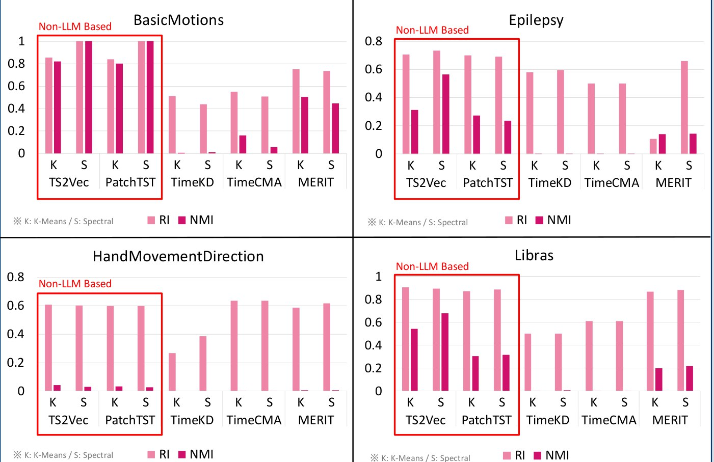

시계열 임베딩의 군집화 가능성 연구
「비군집화 임베딩의 군집화 가능성 탐구: 다중 도메인 다변량 시계열 데이터 기반 임베딩 모델 비교 연구」 · KSC 2025 학부생 논문
요약
최신 시계열 임베딩 모델 5종의 비지도 군집화 성능을 UEA 다변량 데이터셋 4종에서 비교.
배경
의료, 산업 공정 등에서 다변량 시계열 데이터 급증. 도메인마다 구조와 스케일이 달라 도메인별 임베딩 모델의 개발·유지보수 비용 증가. LLM·자기지도학습 기반 범용 임베딩 연구 증가.
문제
범용 임베딩을 군집화 같은 완전 비지도 과제에 적용한 연구는 드묾. 레이블 없는 데이터에서 표현의 유용성에 대한 실증 근거 부족.
실험 설정
- 모델: TS2Vec, PatchTST(Non-LLM) / MERIT, TimeCMA, TimeKD(LLM 기반)
- 데이터셋: BasicMotions, Epilepsy, Libras, HandMovementDirection
- 군집화: K-Means, Spectral(k-최근접 이웃 그래프, k=15). 군집 수는 클래스 수와 동일
- 지표: RI, NMI. 정답 레이블은 최종 평가에만 사용. 임베딩 차원 320 고정
결과
| 모델 · Model | K-Means RI / NMI | Spectral RI / NMI |
|---|---|---|
| TS2Vec | 0.768 / 0.430 | 0.808 / 0.568 |
| PatchTST | 0.752 / 0.353 | 0.794 / 0.395 |
| MERIT | 0.578 / 0.212 | 0.725 / 0.203 |
| TimeCMA | 0.574 / 0.042 | 0.563 / 0.015 |
| TimeKD | 0.465 / 0.002 | 0.480 / 0.005 |
데이터셋 4종 평균.
그림

시사점
- TS2Vec이 두 군집화 방법 모두에서 최고 성능
- LLM 기반 TimeKD·TimeCMA는 NMI 0.05 미만. 군집은 생기지만 실제 클래스 정보는 반영하지 못하는 RI·NMI 불균형
- 주기적 패턴에는 TS2Vec, 비선형 구조의 의료·센서 데이터에는 PatchTST·MERIT와 Spectral 조합 권장
- 순수 비지도 환경에서는 지식 증류·모달 정렬보다 대조학습·자기지도학습 방식이 적합
참고
연구 지원: 과학기술정보통신부·정보통신기획평가원 SW중심대학사업(2021-0-01082). 관련 SW 저작권 등록 C-2026-000148(저작자 경북대학교 산학협력단).